01 — About
About Me
I love to play games, watch YouTube, spend time with family, eat, and sleep. I am curious to learn new things related to technology and coding. Hopefully I can understand everything and learn new techniques.
02 — Certifications
Achievements & Certifications
-
CCIS InnoVision 2026 — Certificate of Participation College Research, Innovation, and Project Colloquium · June 20, 2026View Certificate
-
Coursera — Introduction to User Experience Design Georgia Institute of Technology · May 18, 2026
-
Coursera — Input and Interaction University of California San Diego · May 1, 2026
03 — Final Project
GabAIRa Care
Gabay na may Pag-alaga, Kahit Saan, Kahit Kailan
GabAIRa Care is an AI-driven medication management app with IoT pillbox integration, built to help patients with chronic conditions — like hypertension and diabetes — stay on top of their medication, and keep their caregivers in the loop in real time.
The system uses an XGBoost machine learning model trained on 10,000 patient records to predict adherence risk and decide the best time to send a reminder: send now, delay, or snooze. It syncs with an ESP32-based smart pillbox over a REST API, so patients can confirm doses by pressing a physical button or tapping "Taken" in the app — either way, caregivers see it update live on their dashboard.
Built with React Native (Expo) and a Neon PostgreSQL cloud database. User Acceptance Testing with 9 respondents, including a professional pharmacist, achieved a 100% pass rate for Patient Role test cases and 99.1% for Caretaker Role, with an overall ISO/IEC 25010 quality rating of 4.09 ("Acceptable") — scoring highest in Usability at 4.80.
Team — Raphael Miguel P. Dumdum, Jan Jeerzyll T. Hudes, Andre Jan M. Pangan
Patient View
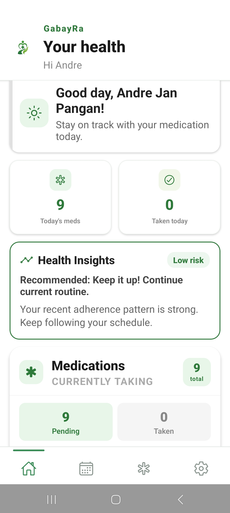
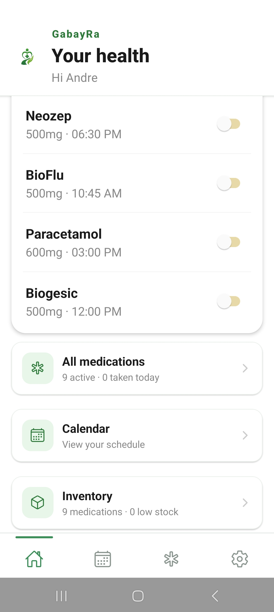
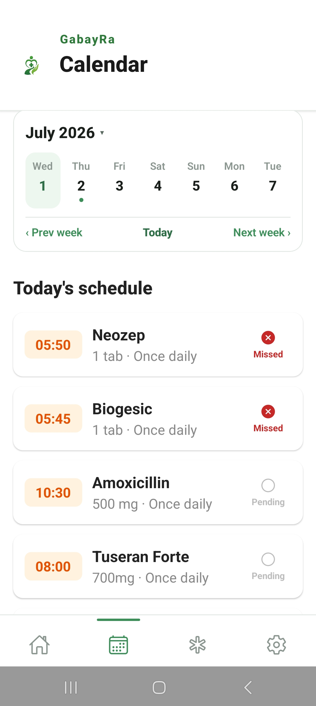
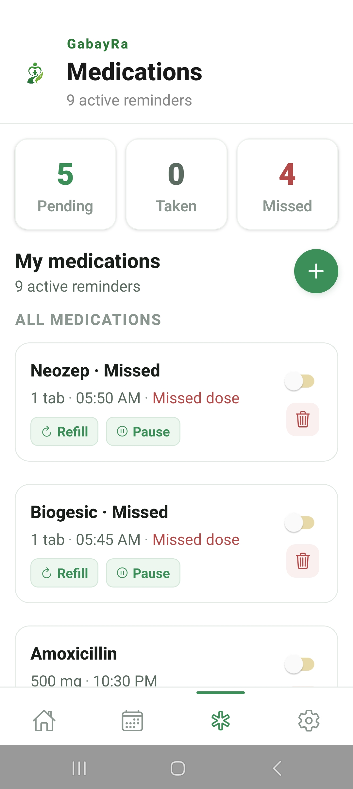
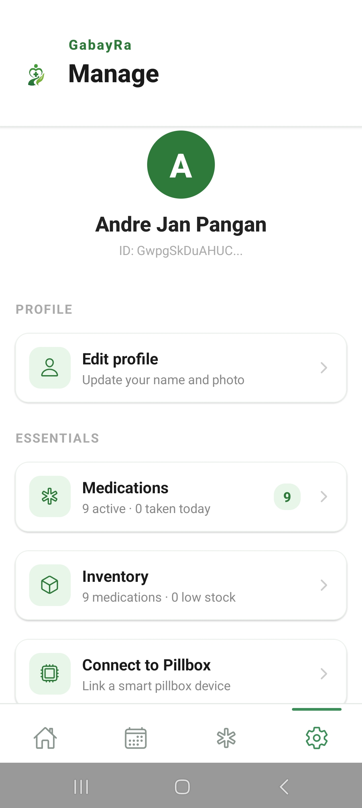
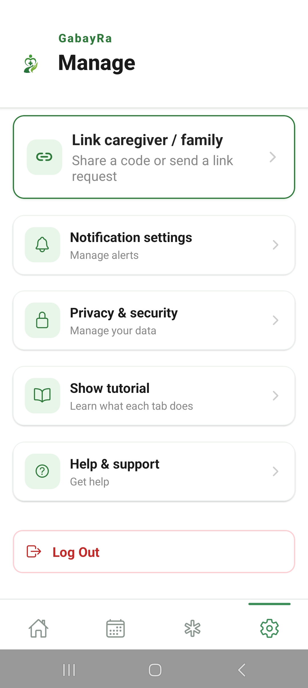
Family View
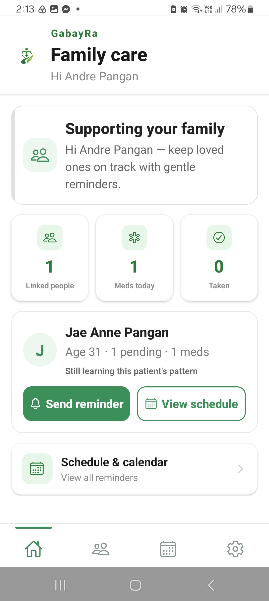
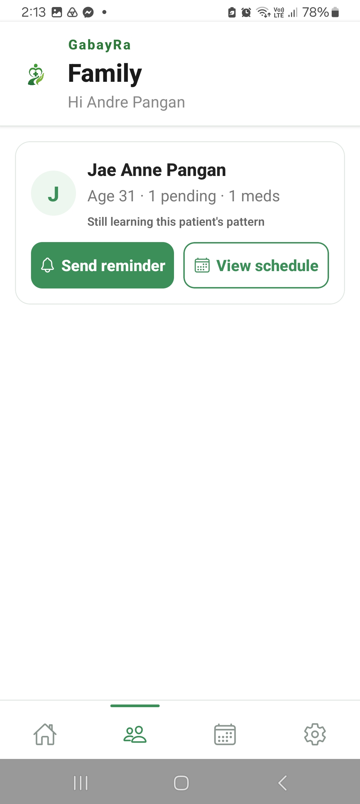
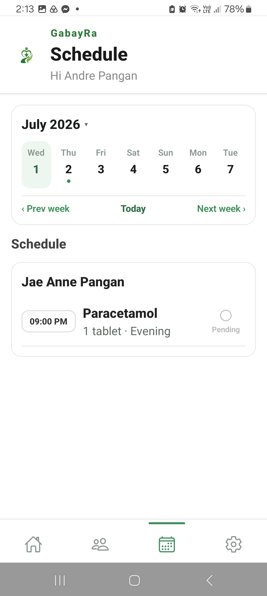
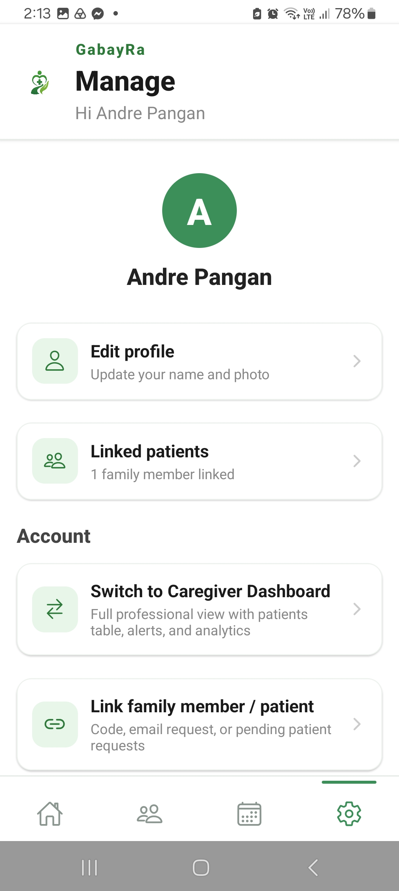
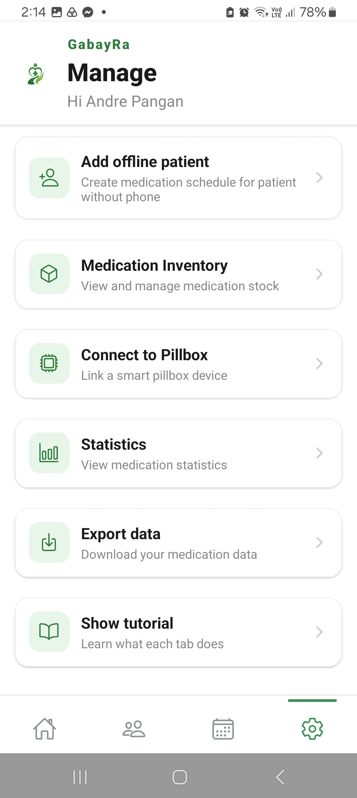
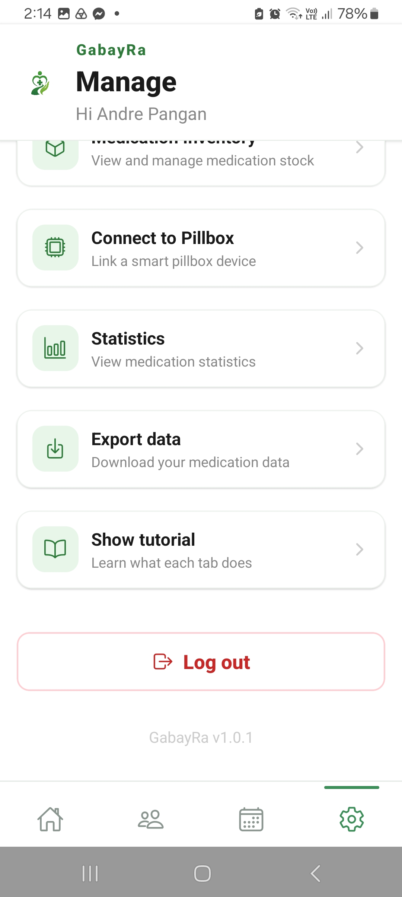
Caregiver View
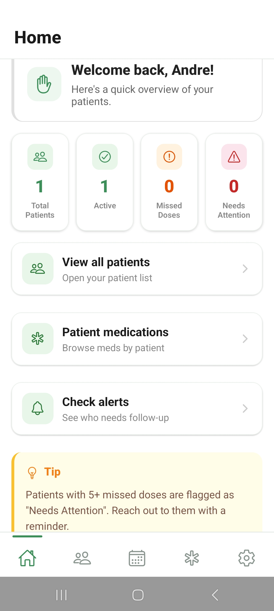
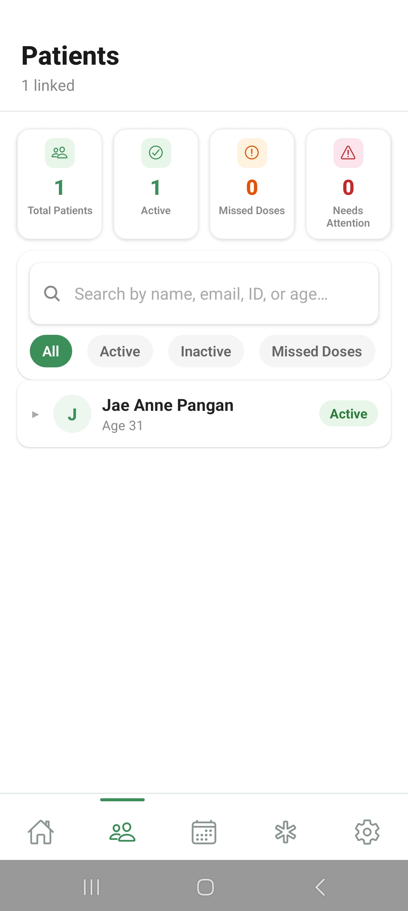
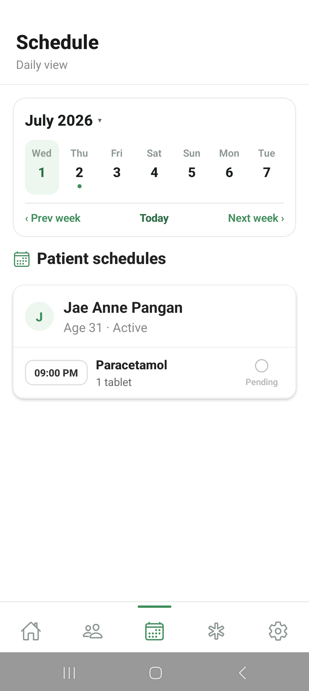
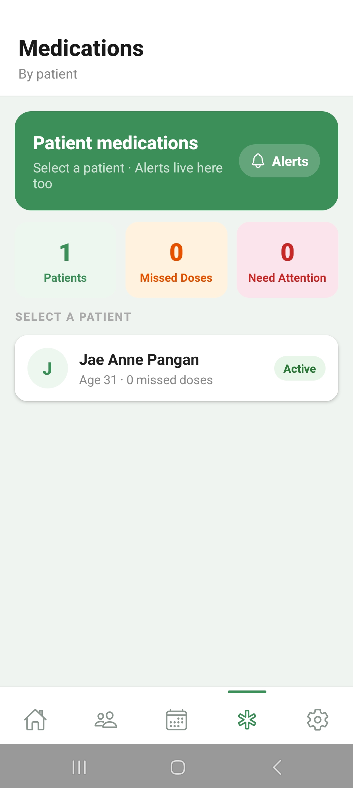
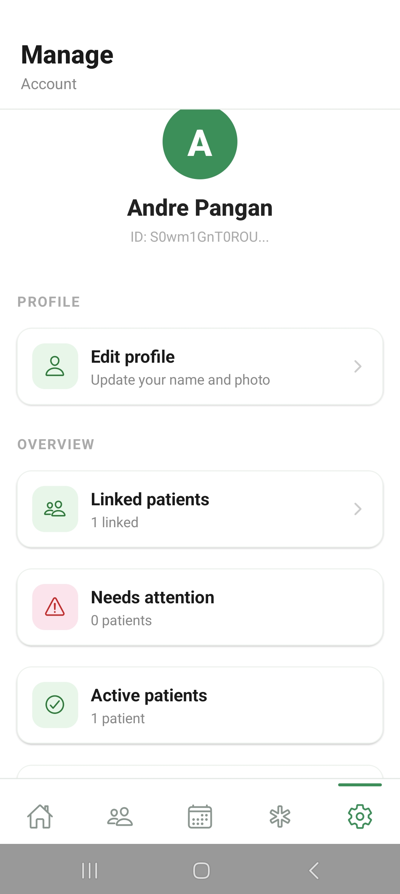
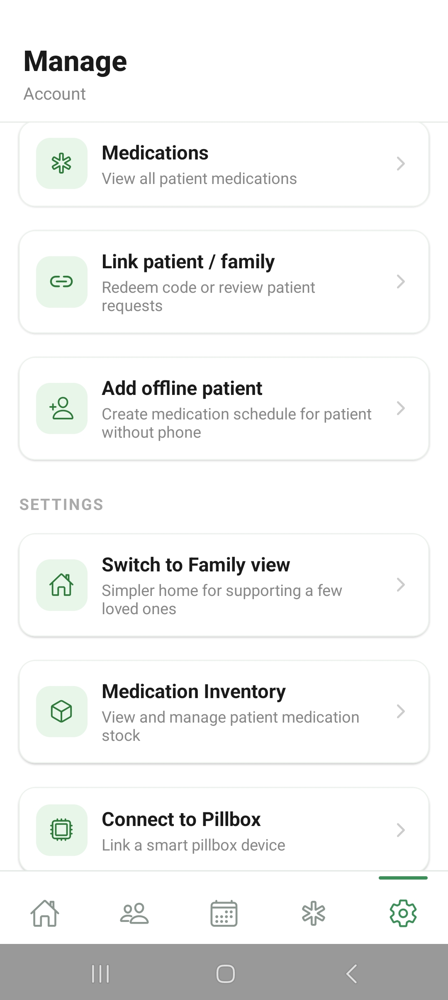
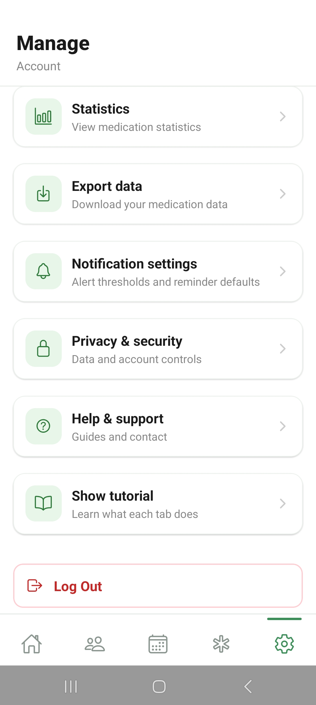
Live Reminder Notification
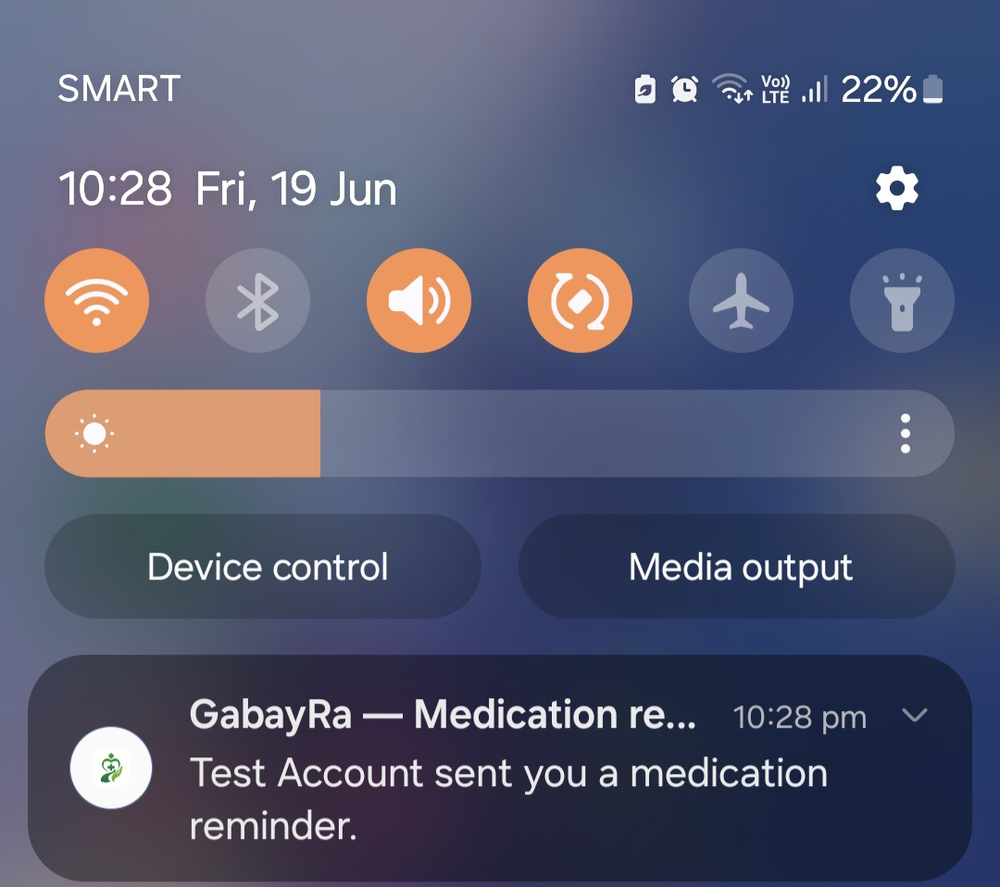
04 — Other Projects